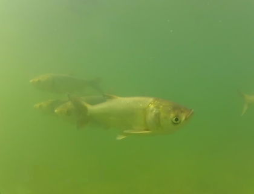

Field Evaluation of chemical attractants to control Asian carp and development of protocols for field verification of response

Chemical stimuli play a critical role in the performance of essential life functions in many fishes, including Asian carp, where chemical stimuli provide important information to seek favorable habitats, locate food, and find other carp for schooling, avoiding predators, and synchronizing sexual readiness within the population. These stimuli can also induce specific behaviors such as attraction and spawning behaviors. Sex pheromones can be induced through hormonal treatments. Repellant alarm pheromones offer carp protection from predation and aggregating pheromones attract carp to schools. Selection and location of planktonic food sources are largely based on chemical cues.
Field studies are required to evaluate the effectiveness of chemical stimuli as an attractant and repellant to aid in the capture of wild carp. Technologies need to be identified for observing the response of wild carp to attractive and repellant stimuli in the field.
Initial tests of a variety of chemical stimuli identified a strong response to the algal food attractant. Field testing of chemical stimulants based on algae will seek to identify potent mixtures based on persistence and duration of attraction. These studies will include consideration of component chemicals such as amino acids produced by algae that enhance the attractiveness of the stimulus, based on carp smell and taste senses. Means of providing a sustained release of the stimulant will be explored through tests of various media. Tests will be conducted to confirm the possibility that carp can be conditioned to feeding stations that can be used to facilitate their capture.
- Creation of protocols for application of chemical attractants for use in managing populations
- Merge chemical attractant and harvesting methodologies to increase the efficiency of the fishing effort
- Merge chemical attractant and microparticle bait methodologies for an integrated control strategy
- Silver and bighead carp respond both physiologically and behaviorally to an algal attractant
- The response is consistent and has been documented in the laboratory and in controlled pond studies
Video documentation of the response
Edward Little, elittle@usgs.gov
Robin Calfee, rcalfee@usgs.gov
US Geological Survey, Columbia Environmental Research Center
573-875-5399